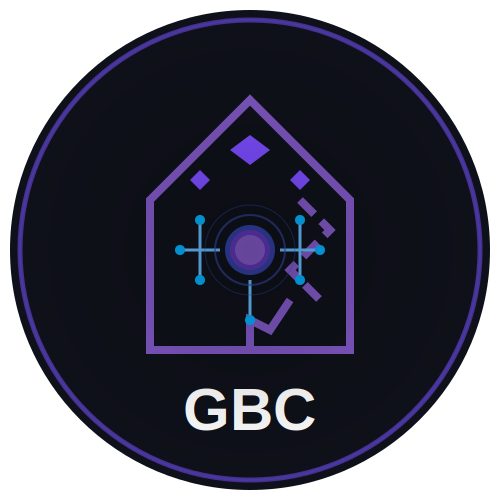

<link rel="stylesheet" href="css/styles.css">
<link rel="stylesheet" href="css/footer.css">
<link rel="stylesheet" href="https://cdnjs.cloudflare.com/ajax/libs/font-awesome/6.0.0/css/all.min.css">

<!-- Footer component that can be included in other pages -->
<footer class="site-footer">
    <div class="footer-container">
        <div class="footer-section brand">
            
            <h3>Gate Breakers CTF</h3>
            <p>Test your hacking skills and compete with the best!</p>
        </div>

        <div class="footer-section links">
            <h4>Quick Links</h4>
            <ul>
                <li><a href="index.html">Home</a></li>
                <li><a href="challenges.html">Challenges</a></li>
                <li><a href="leaderboard.html">Leaderboard</a></li>
                <li><a href="rules.html">Rules</a></li>
                <li><a href="faq.html">FAQ</a></li>
            </ul>
        </div>

        <div class="footer-section contact">
            <h4>Contact Us</h4>
            <ul>
                <li><i class="icon-email"></i> ctf@college.edu</li>
                <li><i class="icon-location"></i> Computer Science Department</li>
                <li><i class="icon-discord"></i> Join our Discord</li>
            </ul>
        </div>
    </div>

    <div class="footer-bottom">
        <div class="copyright">
            &copy; 2025 Yenixa CTF. All rights reserved.
        </div>
        <div class="sponsors">
            <span>Created by:</span>
            <a href="https://github.com/rahzinashford" class="social-icon" title="GitHub"><i class="fab fa-github"></i></a>
            <a href="https://www.linkedin.com/in/mohammed-rahzin-692b47352?utm_source=share&utm_campaign=share_via&utm_content=profile&utm_medium=android_app" class="social-icon" title="LinkedIn"><i class="fab fa-linkedin"></i></a>
        </div>
    </div>
</footer>
